--:--:--
มื้อวันนี้
0/4
บันทึก
การให้อาหาร
0
วันติดต่อกัน
กินครบ 4 มื้อ · เก่งมาก
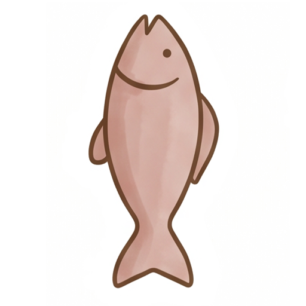
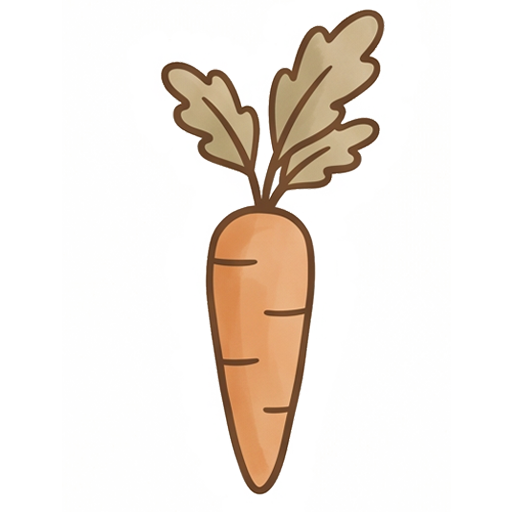
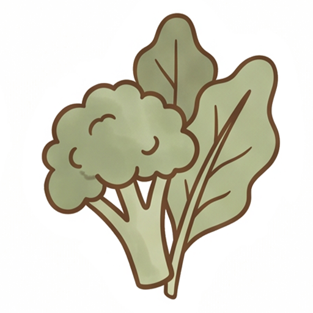
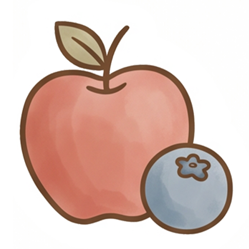
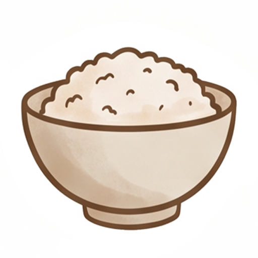
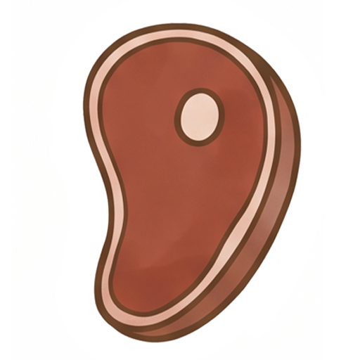
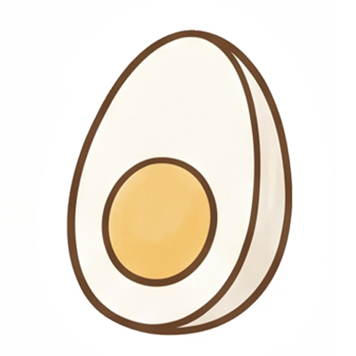
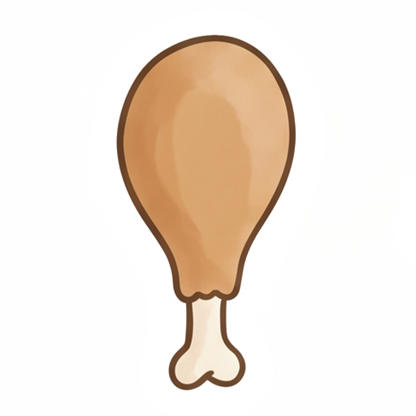
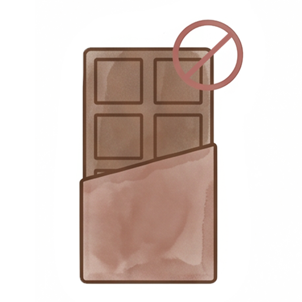
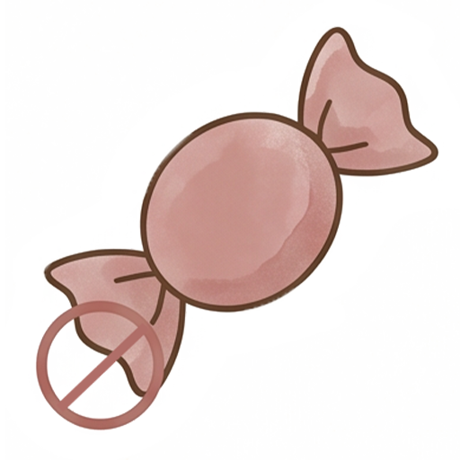
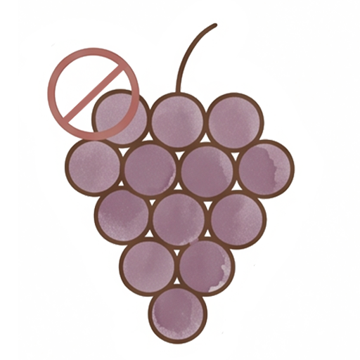
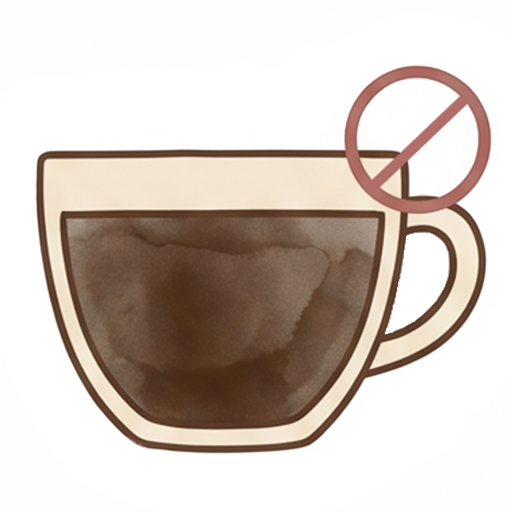
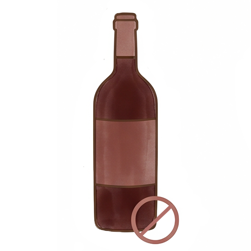
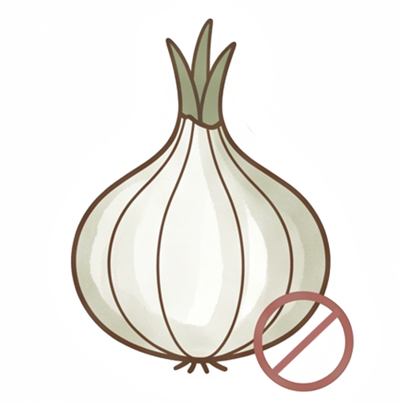
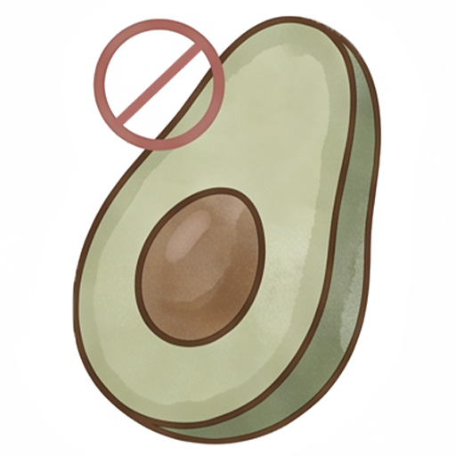
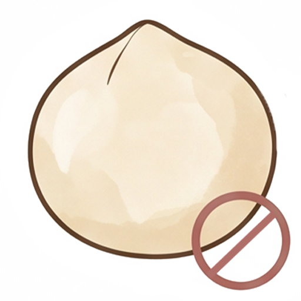
โทรหาสัตวแพทย์ทันที อย่ารอให้มีอาการ
บอก: สิ่งที่กิน + ปริมาณโดยประมาณ + เวลาที่กิน
ห้ามทำให้อาเจียนเองโดยไม่ได้รับคำสั่งจากสัตวแพทย์